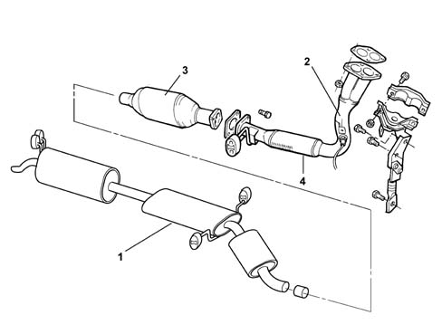
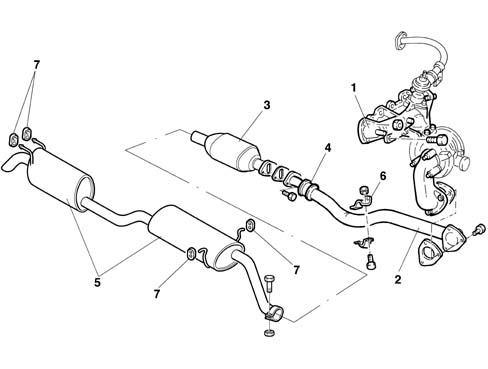
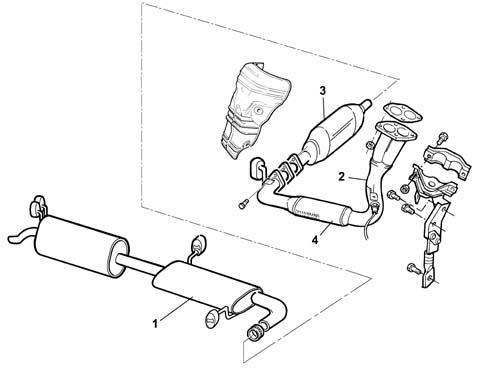
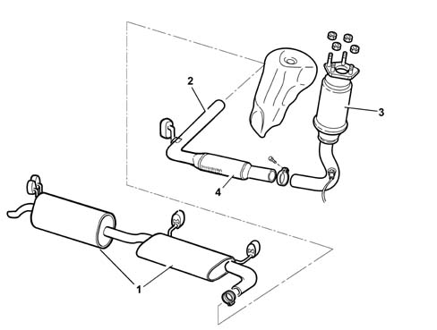

Introduction - EXHAUST PIPES AND SILENCERS
- Path
- Descriptions > 10 ENGINE UNIT > 1076 EXHAUST PIPES AND SILENCERS > Introduction - EXHAUST PIPES AND SILENCERS
- Kind
- system description
- Applies to
- all engines; all production periods
- Interactive page
- https://sloeber94.github.io/elrnDB-fMltpl/en/#/2892423
Applies to: engines: 1.6 16v; all production periods
The engine exhaust gases flow into a manifold (1) and then through an exhaust pipe (2) to the three-way catalytic converter (3) (see 1080).
At the front of the exhaust pipe, there is a flexible component (4) for limiting the transmission of vibrations.
The rear exhaust section comprises three silencers (1).
Special guards limit the radiation of heat towards the body shell.
The various components are supported by mountings and rubber rings secured to the underbody.

1, Rear exaust pipe with silencers 2, Front exhaust pipe 3, Catalytic converter See subassembly 1080EXHAUST EMISSION CONTROL SYSTEM) 4, Flexible element
Applies to: engines: 1.9 JTD 8V; all production periods
The engine exhaust gases flow through the manifold (1) to the turbocharger and then via a pipe (2) to the oxidizing catalytic converter (3) (see 1080).
At the front of the exhaust pipe, there is a flexible component (4) for limiting the transmission of vibrations.
The rear exhaust section comprises two silencers (5).
Special guards limit the radiation of heat towards the body shell.
The various components are supported by mountings (6) and rubber rings (7) secured to the underbody.

Applies to: engines: 1.6 16v; all production periods; only with equipment: BIPOWER and BLUPOWER
The engine exhaust gases flow into a manifold and then through an exhaust pipe (2) to the three-way catalytic converter (3) (see 1080 EXHAUST EMISSION CONTROL SYSTEM).
At the front of the exhaust pipe, there is a flexible component (4) for limiting the transmission of vibrations.
The rear exhaust section comprises three silencers (1).
Special guards limit the radiation of heat towards the bodyshell.
The various components are supported by mountings and rubber rings secured to the underbody.

1, Rear exaust pipe with silencers 2, Front exhaust pipe 3, Catalytic converter See subassembly 1080EXHAUST EMISSION CONTROL SYSTEM) 4, Flexible element
Applies to: engines: 1.6 16v; all production periods; only with equipment: Euro 3 and BIPOWER
The engine exhaust gases flow through manifold to the three-way catalytic converter (3) (1080 EXHAUST EMISSION CONTROL SYSTEM).
At the front of the exhaust pipe, there is a flexible component (4) for limiting the transmission of vibrations.
The rear exhaust section comprises two silencers (1).
Special guards limit the radiation of heat towards the bodyshell.
The various components are supported by mountings and rubber rings secured to the underbody.

1 Rear exaust pipe with silencers 2 Front exhaust pipe 3 Catalytic converter (See subassembly 1080EXHAUST EMISSION CONTROL SYSTEM) 4 Flexible element
Applies to: engines: 1.6 16v; all production periods; only with equipment: GPOWER
CONSTRUCTION FEATURES
The engine exhaust gases flow through the manifold to the three-way catalytic converter (3) (1080 EXHAUST EMISSION CONTROL SYSTEM).
At the front of the exhaust pipe, there is a flexible component (4) for limiting the transmission of vibrations.
The rear exhaust section comprises two silencers (1).
Special guards limit the radiation of heat towards the bodyshell.
The various components are supported by mountings and rubber rings secured to the underbody.
1 Rear exhaust pipe with silencers 2 Front exhaust pipe 3 Catalytic converter (See subassembly 1080EXHAUST EMISSION CONTROL SYSTEM) 4 Flexible element